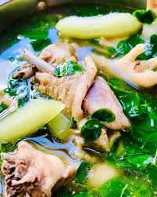

Native Chicken Tinola
Ingredients
- Native chicken, cut into pieces
- Green papaya or sayote
- Malunggay leaves
- Garlic, onion, ginger
- Fish sauce or salt
- Water
Instructions
- Sauté garlic, onion, and ginger until fragrant.
- Add chicken pieces and cook until lightly browned.
- Pour in water and bring to a boil. Simmer until chicken is tender.
- Add green papaya or sayote; cook until softened.
- Season with fish sauce or salt.
- Add malunggay leaves just before serving.
- Serve hot with rice.
History
Native Chicken Tinola is a comforting Tigwahanon dish, often served to family and guests as a symbol of care.